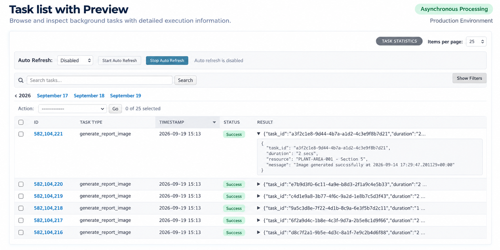
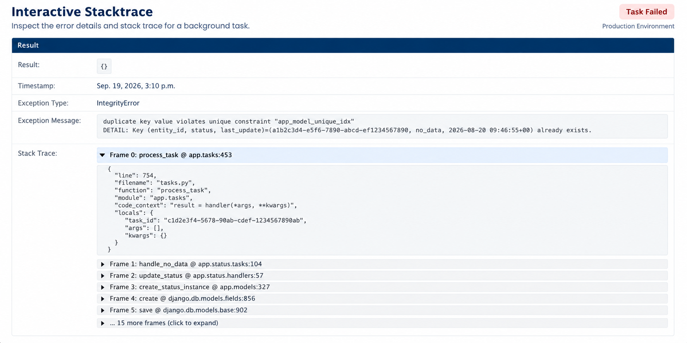

Admin¶
Logs de tasks¶
O admin de TaskLog lista execuções de tasks com nome, timestamp, status e preview do resultado JSON. Os filtros incluem status, timestamp, nome da task e fila.
A listagem também inclui:
Atalho para o dashboard de estatísticas.
Tamanho de página configurável.
Filtros retráteis que liberam mais espaço de tela para a listagem de tasks.
Controles de auto-refresh para intervalos de 5, 10, 30 e 60 segundos.
O preview do resultado ajuda times a analisar execuções recentes diretamente pela listagem, sem abrir o detalhe de cada task.
{kind=link}

Listagem de tasks com preview do resultado, auto-refresh e filtros retráteis.¶
Detalhe da task¶
A página de detalhe da task é somente leitura e mostra:
Task id, nome da task, nome da task periódica, fila, worker e status.
Args e kwargs.
Resultado JSON formatado.
Tipo e mensagem da exceção em caso de falha.
Detalhes interativos do traceback.
O detalhe de tasks com falha inclui o stacktrace completo e variáveis de contexto sanitizadas capturadas no momento do erro. Isso acelera o debug de falhas em produção porque o estado local relevante fica disponível junto do traceback.
{kind=link}

Stacktrace interativo com variáveis de contexto sanitizadas.¶
Reexecutar task¶
A página de detalhe inclui a ação “Re-run Task”. Ela envia o nome original da task, args, kwargs e fila de volta para o Celery usando a app Celery atual.
Estatísticas¶
O proxy model TaskLogStatistics expõe um dashboard administrativo com cards, gráficos e tabelas para monitoramento operacional:
Total de tasks.
Tasks com sucesso e falha.
Taxa de sucesso.
Duração média e máxima.
Média de mensagens por dia, hora e minuto.
Tasks e falhas por dia.
Distribuição de sucesso vs falha.
Principais filas.
Distribuição por worker.
Distribuição de tasks periódicas.
Principais tasks.
Tasks mais lentas.
Principais mensagens de erro.
O dashboard oferece aos times uma visão operacional rápida do throughput do Celery, falhas, distribuição por fila, workers, tasks periódicas, tasks lentas e erros comuns.

Dashboard de estatísticas para monitoramento de tasks Celery.¶